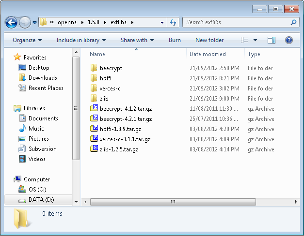
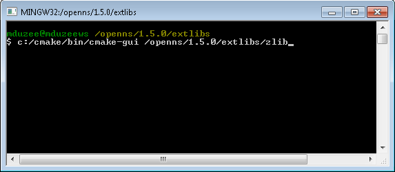
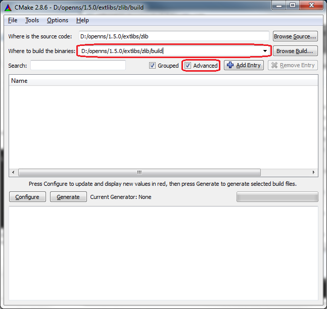
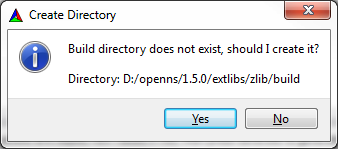
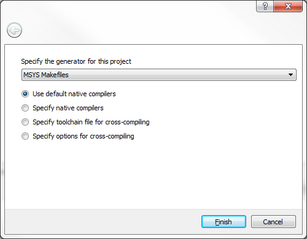
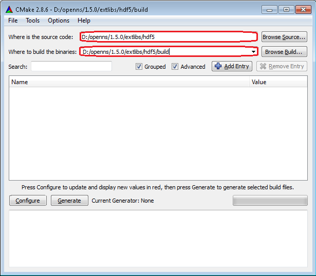
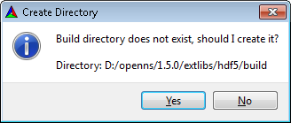
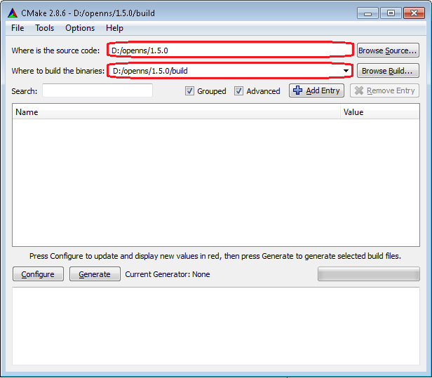
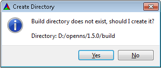

Building with Mingw/MSYS
Note:
These instructions assume that the openns source code is located at
'D:/openns/1.5.0' and the CMake utility is installed at 'C:/cmake'.
- Extract the third party modules
- Configure and build zlib
- Configure and build HDF5
- Configure and build xerces
- Configure and build beecrypt
- Configure and build bag
Extract the third party modules
Browse to the extlibs folder and extract the contained third party
modules. Note that the version numbers have been removed from the
folder names after extraction. For the Visual Studio build we will use
beecrypt 4.2.1.

Configure and build zlib
From the msys command prompt launch the cmake gui to configure the build.

Specify the location of the cmake binary files. NOTE - The 'Advanced' option MUST be enabled.

Click the 'Configure' button. You will be prompted to create the output folder. Select Yes.

You will then be prompted to select the appropriate generate.

Update the following options.
BUILD
BUILD_SHARED_LIBS = YES
CMAKE
CMAKE_INSTALL_PREFIX = D:/openns/1.5.0/extlibs/zlib/installed
Finally
click the 'Configure' and then 'Generate' buttons. The makefile is now
available in the zlib/build folder. From the MSYS console browse to the zlib/build folder and run the following command.
make install
Configure and build HDF5
In the CMake GUI select the HDF5 folder and specify the location of the binary files. Next click the 'Configure' button.

Click the 'Configure' button. You will be prompted to create the output folder. Select Yes.

You will then be prompted to select the appropriate generate.
Update the following options.
BUILD
BUILD_SHARED_LIBS = YES
CMAKE
CMAKE_INSTALL_PREFIX = D:/openns/1.5.0/extlibs/hdf5/installed
HDF5
HDF5_USE_16_API_DEFAULT = YES
HDF5_ENABLE_Z_LIB_SUPPORT = YES
Click the 'Configure' button again and then update the following options.
ZLIB
ZLIB_INCLUDE_DIR = D:/openns/1.5.0/extlibs/zlib/installed/include
ZLIB_LIBRARY = D:/openns/1.5.0/extlibs/zlib/installed/lib/zlib.lib
Finally click the 'Configure' and then 'Generate' buttons. The makefile is now
available in the hdf5/build folder. From the MSYS console browse to the hdf5/build folder and run the following command.
make install
Configure and build xerces
From the MSYS console browse to the xerces-c folder and run the follwoing commands:
./configure --prefix=d:/openns/1.5.0/extlibs/xerces-c/installed/
make -j4 libxerces_c_la_LDFLAGS="-release 3.1 -no-undefined" install
Configure and build beecrypt
From the MSYS console browse to the xerces-c folder and run the follwoing commands:
./configure --prefix=d:/openns/1.5.0/extlibs/beecrypt/installed/ --without-java --without-python --disable-static
make install
Configure and build bag
In the CMake GUI select the openns folder and specify the location of the binary files. Next click the 'Configure' button.

Click the 'Configure' button. You will be prompted to create the output folder. Select Yes.

You will then be prompted to select the appropriate generate.
Finally click the 'Configure' and then 'Generate' buttons. The makefile is now
available in the openns/build folder. From the MSYS console browse to the openns/build folder and run the following command.
make